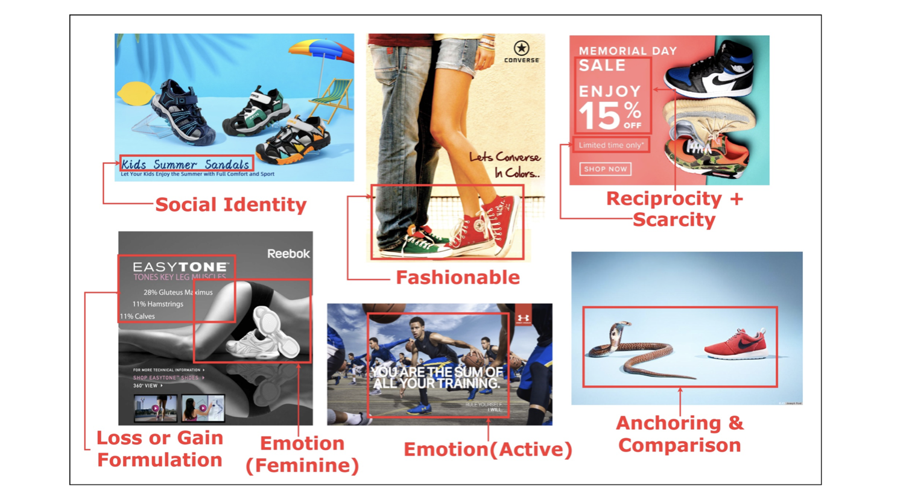
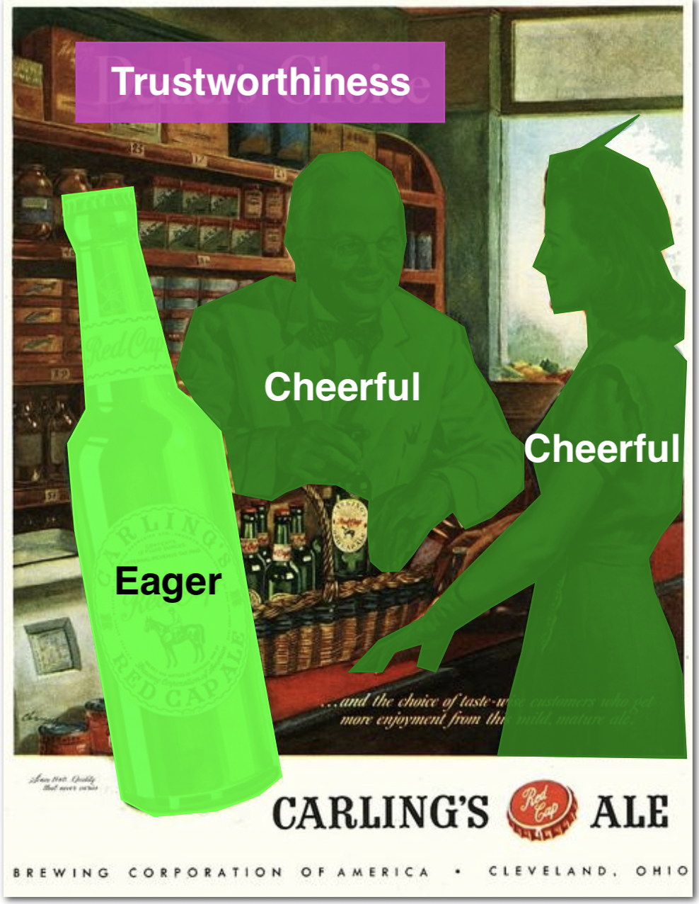
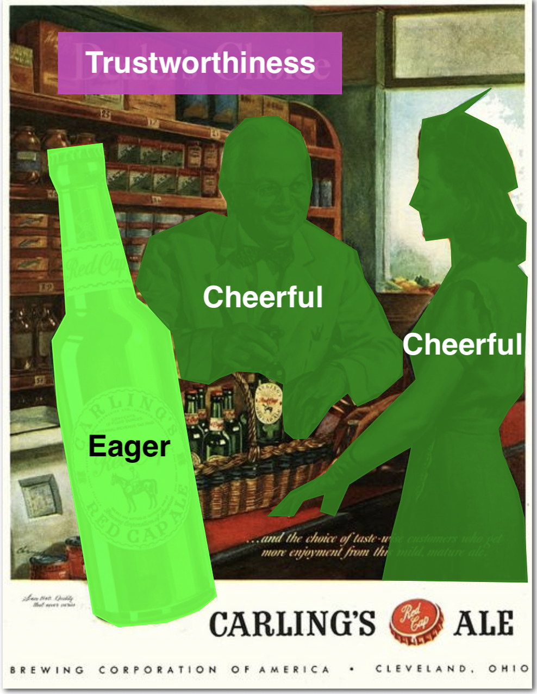
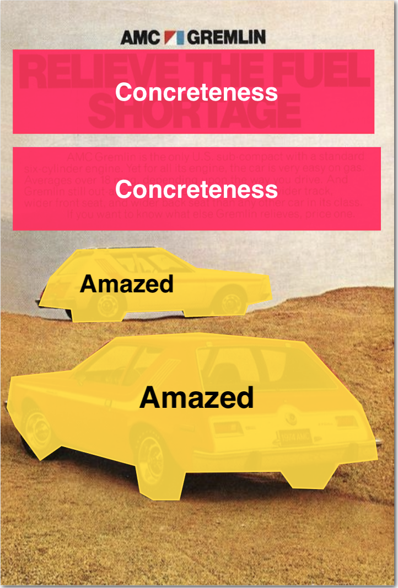
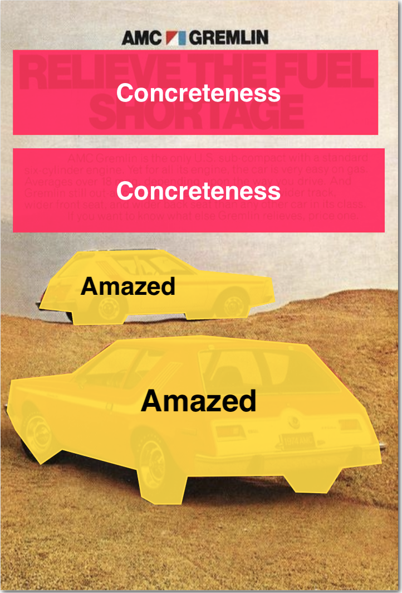

Introduction
Modeling what makes an advertisement persuasive, i.e., eliciting the desired response from consumer, is critical to the study of propaganda, social psychology, and marketing. Despite its importance, computational modeling of persuasion in computer vision is still in its infancy, primarily due to the lack of benchmark datasets that can provide persuasion-strategy labels associated with ads. Motivated by persuasion literature in social psychology and marketing, we introduce an extensive vocabulary of persuasion strategies and build the first ad image corpus annotated with persuasion strategies. We then formulate the task of persuasion strategy prediction with multi-modal learning, where we design a multi-task attention fusion model that can leverage other ad-understanding tasks to predict persuasion strategies. Further, we conduct a real-world case study on 1600 advertising campaigns of 30 Fortune-500 companies where we use our model’s predictions to analyze which strategies work with different demographics (age and gender). The dataset also provides image segmentation masks, which labels persuasion strategies in the corresponding ad images on the test split. We publicly release our code and dataset.
Persuasion Strategies in Advertisements

Different Advertisements with Different Persuasive Strategies Selling Same Product
Explore Dataset
Distribution of Persuasion Strategies
Sample Segmented Images
 

 

Pitt Ads Dataset
Pitt ads dataset contains an image dataset of 64,832 image ads, and a video dataset of 3,477 ads. This data contains annotations encompassing the topic and sentiment of the ads, questions and answers describing what actions the viewer is prompted to take and the reasoning that the ad presents to persuade the viewer. The Pitt Ads dataset can be donwloaded from here.
Get the Dataset
Collaborators
 1. Indraprastha Institute of Information Technology Delhi
1. Indraprastha Institute of Information Technology Delhi
2. Adobe Media & Data Science Research
3. Georgia Institute of Technology
4. The State University of New York, Buffalo
Contact
For any questions, issues, concerns, and comments, please email Yaman Kumar Singla at yamank@iiitd.ac.in
Terms of Use
If you use our data, please cite the following papers:
1. Yaman Kumar Singla, Rajat Jha, Aditya Garg, Ayush Bhardwaj, Tushar, Arunim Gupta, Milan Aggarwal,
Balaji Krishnamurthy, Diyi Yang, Rajiv Ratn Shah, and Changyou Chen. "Persuasion Strategies in Advertisements" (2022).
2. Hussain, Zaeem, Mingda Zhang, Xiaozhong Zhang, Keren Ye, Christopher Thomas, Zuha Agha, Nathan Ong,
and Adriana Kovashka. "Automatic understanding of image and video advertisements."
In Proceedings of the IEEE conference on computer vision and pattern recognition, pp. 1705-1715. 2017.